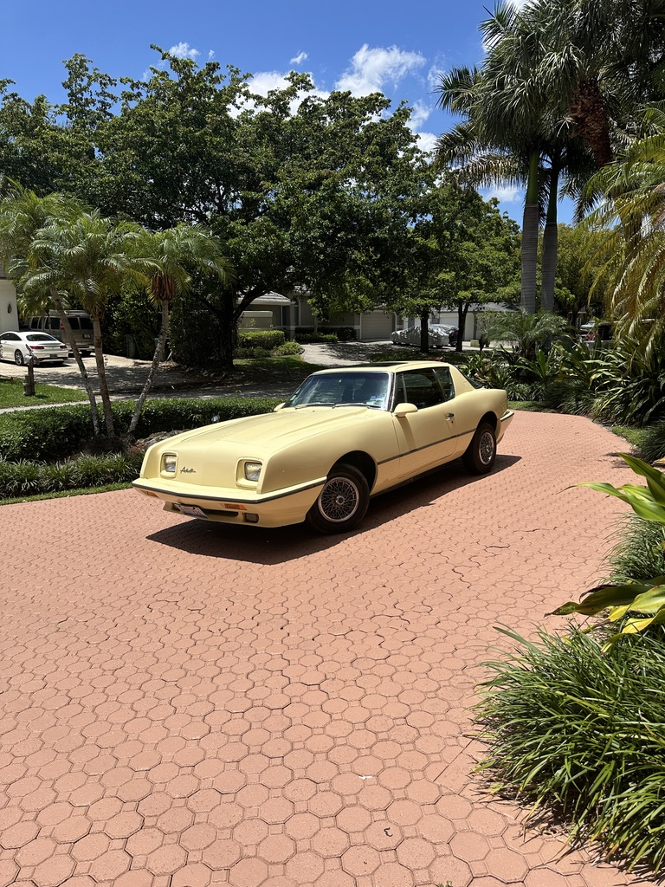

1988 Avanti McKelly Edition
Peter's 1988 Avanti McKelly Edition is a family grand-touring car being returned to the road after decades of storage, with attention focused on suspension, handling, and reliable road use.
- Family vehicle brought back after years of storage
- Build focus: suspension, handling, and restoration support
- Photos include exterior, interior, garage work, and engine-bay progress